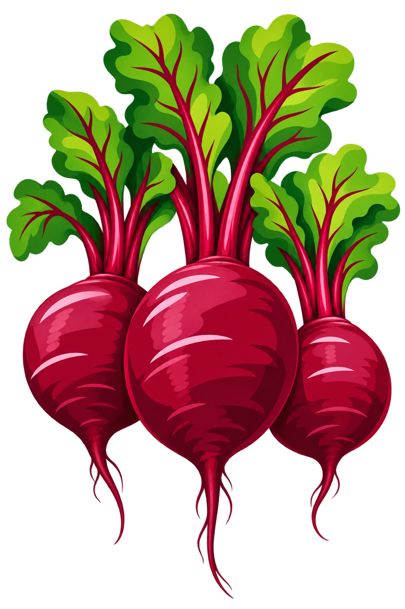
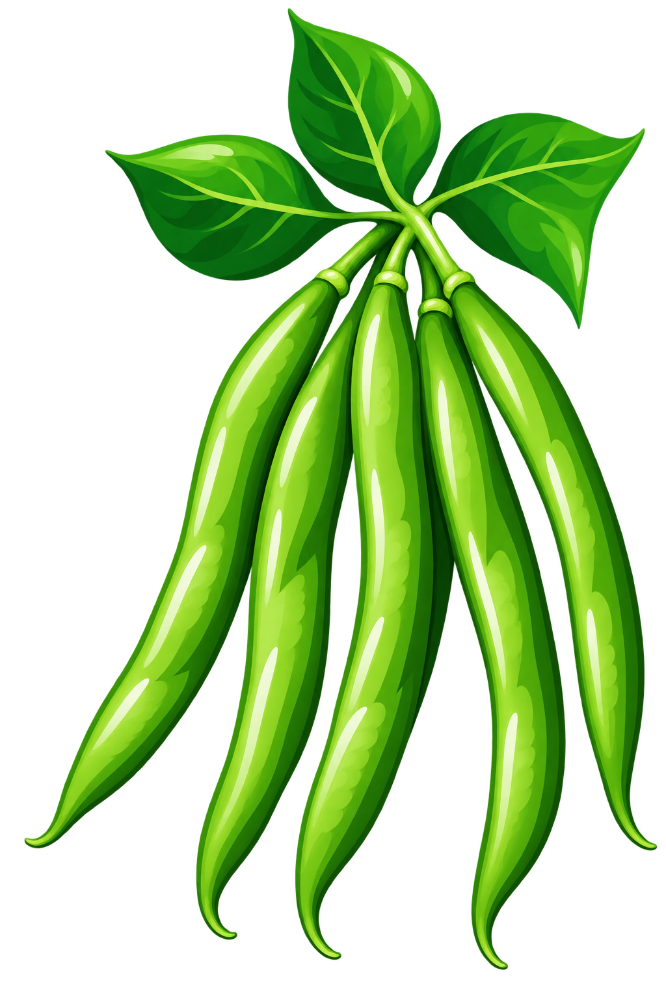

Two new illustrated directions
C and D respond to the two named publisher covers. A remains John’s preferred earlier idea; no final choice has been made. All text and crop illustrations use the house lettering/drawing language.
Earlier preferred idea
B — retained comparison, not preferred
Composition references
Published covers retained for comparison; attribution and exact image URLs are in ARTWORK.json. Their artwork and publisher marks are not used in the proposals.
Direct house-style references
Carrot
Beetroot
French bean